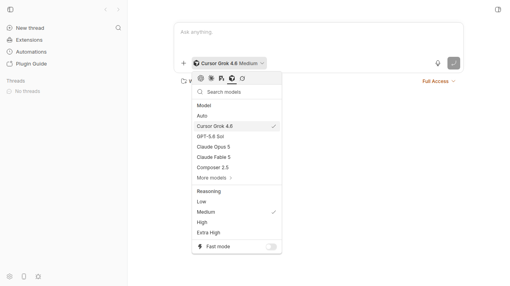
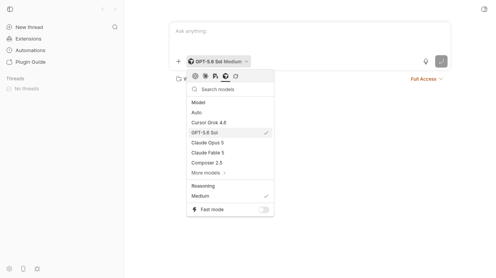

#2503 · 0.40.0 Cursor picker: only Grok keeps a real reasoning ladder
Verdict: REPRODUCED · Root-cause confidence: high · Linked open PRs: none
1. TL;DR
bb 0.40.0 shows a complete reasoning list for Cursor Grok 4.6. It shows only Medium for GPT-5.6 Sol and no reliable ladder for Opus or Fable. Cursor ACP still supplies full lists for all three models. bb probes 35 models in sequence, but it stops after five seconds. Grok has priority, so the probe usually does not reach the other primary models. If it reaches Opus or Fable, a second defect can select Thinking and return no mapped levels.
Composer 2.5 does not supply a reasoning option through Cursor ACP. Its single managed Medium entry does not hide a Cursor reasoning list.
2. Claims vs findings
| Claim from the issue | Status | Evidence |
|---|---|---|
| Only Grok keeps a real reasoning list in bb 0.40.0. | Verified | The live CLI and UI show four Grok levels. The latest run showed Sol, Fable, and Composer at Medium. It showed no mapped Opus level because the probe reached Opus and selected Thinking. |
| Cursor ACP still supplies Sol levels from none through max. | Verified | The direct ACP probe returned none, low, medium, high, xhigh, max for gpt-5.6-sol. |
| The five-second probe does not reach Sol. | Verified | The code probes Grok 4.6 and Grok 4.5 first. It then probes the full 35-model list. Five direct primary-model changes took 5,802 ms in total. |
Opus and Fable supply two thought_level options. | Verified | Cursor returned Thinking first and Effort second. The focused test proved that bb selects Thinking and returns no mapped levels. |
| Composer 2.5 should have a real reasoning list. | Refuted | Cursor ACP returned no thought_level option for Composer. It returned only Fast model control. |
| bb 0.39.0 used Cursor CLI model families. | Verified | The desktop-v0.39.0 source used cursor-agent --list-models. It named Sol, Opus, and Fable reasoning families directly. This report did not run the old application. |
| The CLI reasoning argument works around the picker defect. | Unverified | This report did not start a paid Cursor turn. The ACP probe only proved that Cursor accepts the model change and advertises the level. |
3. Environment
- bb commit:
ad79bbb5ec909524f8f281e62d860c588a86f332, version 0.40.0. - OS: Linux 7.0.0-29-generic, x86_64.
- Node: v24.18.0 for the revised build, tests, and source dev app. The original screenshot run used Node 22.23.2.
- pnpm: 9.15.0.
- Cursor CLI:
2026.08.11-e8db854. - App:
http://localhost:17990. Server:http://localhost:25990. Host daemon:http://127.0.0.1:33990. - Data directory:
~/.bb-dev/tmp-bb-report-2503-revise-typenh-9c8c668e09cb.
4. Minimal reproduction
4.1 Live catalog and UI
- Check out the base commit. Install the workspace. Build it with Turbo.
git checkout ad79bbb5ec909524f8f281e62d860c588a86f332 pnpm install --frozen-lockfile --prefer-offline pnpm exec turbo run build
- Start the isolated dev app. Set the CLI environment.
scripts/bb-dev-app current eval "$(scripts/bb-dev-app env)"
- Run the saved check from the repository root. The local path works before report publication. The raw URL works after publication.
local_artifact=/tmp/bb-reports/issues/2503/repro/catalog-repro.sh if [[ -f "$local_artifact" ]]; then cp "$local_artifact" /tmp/bb-2503-catalog-repro.sh else curl -fsS https://raw.githubusercontent.com/get-bb/reports/main/issues/2503/repro/catalog-repro.sh \ -o /tmp/bb-2503-catalog-repro.sh fi bash /tmp/bb-2503-catalog-repro.shExpected: Sol supplies
none, low, medium, high, xhigh, max.Actual:
grok-4.6: low,medium,high,xhigh gpt-5.6-sol: medium claude-opus-5: <none> claude-fable-5: medium composer-2.5: medium FAIL: GPT-5.6 Sol expected ["none","low","medium","high","xhigh","max"] but received ["medium"]
Files: catalog-repro.sh · catalog-output.txt
- Open New Thread. Select Cursor. Compare Grok 4.6 with GPT-5.6 Sol.


4.2 Direct Cursor ACP control
This probe uses no bb catalog code. It proves that Cursor still supplies the missing data.
local_artifact=/tmp/bb-reports/issues/2503/repro/cursor-acp-probe.mjs
if [[ -f "$local_artifact" ]]; then
cp "$local_artifact" /tmp/bb-2503-cursor-acp-probe.mjs
else
curl -fsS https://raw.githubusercontent.com/get-bb/reports/main/issues/2503/repro/cursor-acp-probe.mjs \
-o /tmp/bb-2503-cursor-acp-probe.mjs
fi
node /tmp/bb-2503-cursor-acp-probe.mjs
model-count: 35
{"model":"grok-4.6","elapsedMs":1189,"thoughtLevel":[{"id":"effort","values":["low","medium","high","xhigh"]}]}
{"model":"gpt-5.6-sol","elapsedMs":1063,"thoughtLevel":[{"id":"reasoning","values":["none","low","medium","high","xhigh","max"]}]}
{"model":"claude-opus-5","elapsedMs":958,"thoughtLevel":[{"id":"thinking","values":["false","true"]},{"id":"effort","values":["low","medium","high","xhigh","max"]}]}
{"model":"claude-fable-5","elapsedMs":1179,"thoughtLevel":[{"id":"thinking","values":["false","true"]},{"id":"effort","values":["low","medium","high","xhigh","max"]}]}
{"model":"composer-2.5","elapsedMs":1413,"thoughtLevel":[]}
Files: cursor-acp-probe.mjs · cursor-acp-probe.log
4.3 Focused failing test
Copy the test into the bridge package. Run the package test through Turbo.
local_artifact=/tmp/bb-reports/issues/2503/repro/issue-2503.repro.test.ts
if [[ -f "$local_artifact" ]]; then
cp "$local_artifact" /tmp/bb-2503.repro.test.ts
else
curl -fsS https://raw.githubusercontent.com/get-bb/reports/main/issues/2503/repro/issue-2503.repro.test.ts \
-o /tmp/bb-2503.repro.test.ts
fi
cp /tmp/bb-2503.repro.test.ts packages/provider-bridge-acp/src/bridge/issue-2503.repro.test.ts
pnpm exec turbo run test --filter=@bb/provider-bridge-acp --force
The test file contains this complete test:
import { describe, expect, it } from "vitest";
import {
buildAcpNativeReasoningSupport,
findAcpThoughtLevelConfigOption,
} from "./model-catalog.js";
describe("issue #2503", () => {
it("uses the effort ladder when Cursor returns Thinking before Effort", () => {
const thinking = {
id: "thinking",
name: "Thinking",
category: "thought_level",
type: "select",
currentValue: "true",
options: [{ value: "true" }, { value: "false" }],
};
const effort = {
id: "effort",
name: "Effort",
category: "thought_level",
type: "select",
currentValue: "medium",
options: [
{ value: "none" },
{ value: "low" },
{ value: "medium" },
{ value: "high" },
{ value: "xhigh" },
{ value: "max" },
],
};
const selected = findAcpThoughtLevelConfigOption([thinking, effort]);
const support = buildAcpNativeReasoningSupport(selected);
expect({
selectedId: selected?.id,
levels: support.supportedReasoningEfforts.map(
(entry) => entry.reasoningEffort,
),
}).toEqual({
selectedId: "effort",
levels: ["none", "low", "medium", "high", "xhigh", "max"],
});
});
});
Actual Vitest result:
FAIL src/bridge/issue-2503.repro.test.ts
AssertionError: expected { selectedId: 'thinking', levels: [] } to deeply equal { selectedId: 'effort', …(1) }
Test Files 1 failed | 17 passed (18)
Tests 1 failed | 288 passed (289)
Files: issue-2503.repro.test.ts · unit-test.log
5. Root cause
5.1 The bounded probe gives its budget to the wrong models
Commit 5d3e7dd59 changed Cursor to the parameterized ACP picker. The change kept a five-second shared probe deadline. It also gave Grok 4.6 and Grok 4.5 first priority.
The Cursor definition lists six primary models. It gives probe priority to two Grok models:
primaryModels: [ "default", "grok-4.6", "gpt-5.6-sol", "claude-opus-5", "claude-fable-5", "composer-2.5", ], reasoningProbePriorityModelIds: ["grok-4.6", "grok-4.5"],
Source: known-agents.ts lines 73–86.
The bridge adds priority models first. It then adds every other model. Thus, the primary list does not limit the probe:
for (const value of args.reasoningProbePriorityModelIds) { /* add first */ }
for (const model of modelOptions) { /* add every remaining model */ }
timeout = setTimeout(() => {
args.connection.kill();
resolve(supportByModel);
}, ACP_NATIVE_REASONING_DISCOVERY_TIMEOUT_MS);
Sources: probe loop and timeout · five-second constant.
The bridge does not split primary models until after it completes the full discovery call. Therefore, selected-only models use time before Sol, Opus, and Fable can use it. See handleModelList lines 2600–2637.
When the timeout omits a model from the result map, the catalog inserts the dummy managed Medium entry:
const reasoning = reasoningByModel?.get(option.value) ?? {
supportedReasoningEfforts: ACP_NATIVE_REASONING_EFFORTS,
defaultReasoningEffort: "medium",
};
Source: model-catalog.ts lines 259–283.
5.2 The first-option rule selects Thinking instead of Effort
Cursor returns two thought_level options for Opus and Fable. The first option uses boolean values. The second option uses the real effort values. bb returns the first option without a value check:
return (configOptions ?? []).find( (option) => option.category === "thought_level", );
Source: model-catalog.ts lines 140–145.
This rule maps Thinking to no bb levels. The same helper controls catalog discovery and live session selection. A probe-order change alone cannot fix Opus and Fable.
5.3 The 0.39.0 catalog read model variants from the Cursor CLI
The desktop-v0.39.0 tag resolves to b33abbff098ac4c857578e7350d492dcaa65d489. Its Cursor launch specification used the CLI model list and named the reasoning variants:
command: "cursor-agent",
modelCli: {
listArgs: ["--list-models"],
selectFlag: "--model",
primaryModels: [
"gpt-5.6-sol-medium",
"claude-opus-5-thinking-medium",
"claude-fable-5-thinking-medium",
],
},
Source: desktop-v0.39.0 acp-launch-specs.ts lines 14–39.
5.4 Current main status
origin/main was the base commit during this investigation. The path log after the base commit was empty. Therefore, current main has no later fix for these files.
6. Proposed fix (first principles)
- Pass the existing primary model list into reasoning discovery. Probe each primary model before any selected-only model.
- Give the primary set enough time. Use a Cursor-specific budget near 12 seconds, or load selected-only reasoning only after selection.
- Select the
thought_leveloption with the most values that map to bb reasoning levels. Do not select the first option only. - Use the same selected option for discovery and live session setup. This keeps the picker and the launched session equal.
- Add a 35-model delay test. Assert correct lists for Sol, Opus, and Fable. Add the two-option test from this report.
- Keep Composer as agent-managed or hide its reasoning row. Do not invent a list that Cursor does not supply.
The code can reuse the current primaryModels field. This change does not require a new wire field. If the fix changes a server-daemon field or its meaning, increment HOST_DAEMON_PROTOCOL_VERSION.
7. Related issues
- PR #1691 introduced the parameterized Cursor catalog and the Grok-first probe.
- Issue #1688 covered the earlier hidden Grok model. It did not cover this probe starvation.
- Issue #1113 added agent-supplied reasoning levels. It is not a duplicate.
- Issue #1612 concerned recursive Grok tool schemas. It is unrelated to model discovery.
8. Appendix
Commands run
gh issue view 2503 --comments --json number,title,body,comments,labels,projectItems,state,url pnpm install --frozen-lockfile --prefer-offline pnpm exec turbo run build git fetch origin main scripts/bb-dev-app current eval "$(scripts/bb-dev-app env)" pnpm bb:dev provider models acp-cursor --json bash /tmp/bb-reports/issues/2503/repro/catalog-repro.sh node /tmp/bb-reports/issues/2503/repro/cursor-acp-probe.mjs pnpm exec turbo run test --filter=@bb/provider-bridge-acp --force git log ad79bbb5ec909524f8f281e62d860c588a86f332..origin/main --oneline -- \ plugins/provider-acp/src/known-agents.ts \ packages/provider-bridge-acp/src/bridge/model-catalog.ts \ packages/provider-bridge-acp/src/bridge/bridge.ts
Artifact inventory
- Live bb catalog check
- Live bb catalog output
- Direct Cursor ACP probe
- Direct Cursor ACP output
- Focused failing test
- Turbo and Vitest output
- Grok screenshot
- Sol screenshot
{kind=link}
{kind=link}
Verification
The independent verifier checked the local catalog, direct ACP probe, focused test, UI screenshots, and base-commit code claims. The initial Pages-only downloads returned HTTP 404 before publication, and the ACP command used a missing repository path. This revision adds an explicit local artifact path with a raw GitHub fallback. It copies all three artifacts to /tmp before use. The revision reran the corrected commands from a detached base-commit worktree. The catalog failed as documented, the ACP probe passed, and the focused test failed with the documented assertion. It also confirmed that origin/main still equals the base commit and added the desktop-v0.39.0 permalink and excerpt.